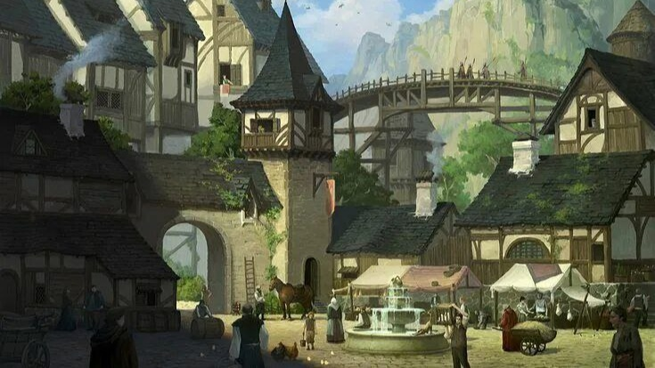
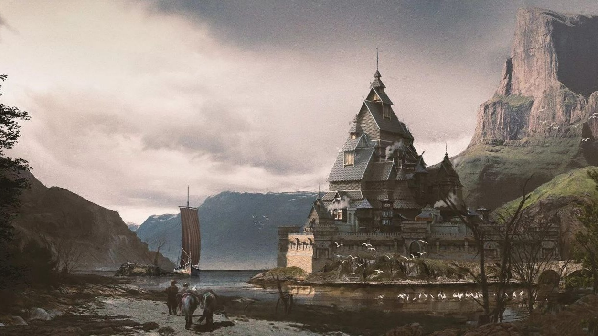
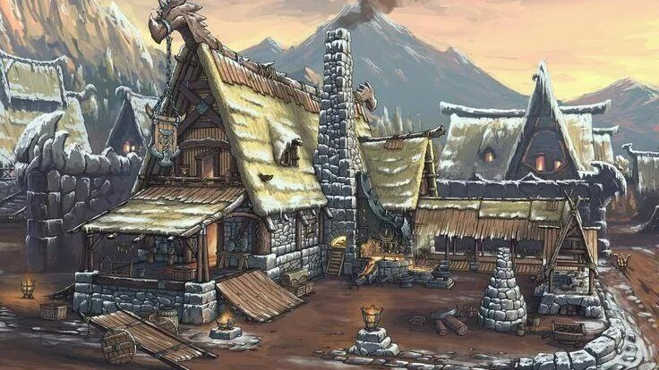

Город Иримор

Добро пожаловать в Иримор!
Иримор— первый по счету крупный город Идрийского королевства, вместе с этим является важной торговой точкой и перевалочным пунктом на реке Цента. Ириморские строители возвели два великих моста через центу в её узких местах, мосты имеют свои посты в которых живёт стража с обоих сторон, чтобы проезд до Торма и Идрия был безопасным, один мост охраняется людьми, второй - дворфами. Ходили слухи о коррупции стражей, однако кто-то их быстро присек.
Сам Иримор является городом Идрийской империи расположенным к западу от столицы на небольшой реке, однако Дворфы живущие там имеют полноценное гражданство и ровно те же права, что и люди. Городом правит Граф Ургорвульфин Вандерфольтгудштатн III потомок дворфов и людей, его замок находится в черте города. И под правлением его династии Иримор процветает, казна не бедствует, а город ухожен и облагорожен. Тут бывает не всегда приветливая стража, однако по слухам местные бары могут конкурировать разве что только с дварфийскими. Иримор торговый город и поэтому сырье, материалы, пищевые и др. Ресурсы тут чаще всего импортные или завезены по приказу столицы.
Город живёт своим чередом и понемногу развивается, вскоре граф планирует построить порт и начать кораблестроение, однако это только проекты, выдвинутые, острым на язык, правителем.
Население

Народ тут обитает смешанный, чаще конечно же это консервативные суровые люди, которые не особо жалуют приезжих и что-то новое. Город хорошо укреплен и имеет казармы в которых тренируется стража, преступность здесь карается прилюдно на площади, поэтому Иримор считается крайне безопасным городом, единственное от чего он страдает — дикое зверье, разоряющее близлежащие фермы и задирающее скот.
Инфраструктура

Иримор полностью самостоятелен и имеет практически все блага цивилизации для спокойной жизни, дома здесь дороже чем в Окраинах. Инфраструктура находится на развитом уровне, есть свои кузни, мясные лавки, разного рода ремесленники, кожевники, плотники и пр. Так же тут стоит не одна кормчма, таверна, имеется своя площадь, две церкви и школы.
Внешний вид

Архитектура смешанная, можно увидеть как дварфийскую работу, так и людскую, вся она гармонично сочетается между собой образует слегка грубоватые, но надёжные и уютные пейзажи.
Итак, это...
Отличное место, чтобы перевести дух, попробовать знаменитое демоническое рагу, закупиться в дальнюю дорогу или даже остаться здесь доживать свою жизнь, сложив свой меч в ножны. Коренной народ рассказывает байки о том, что когда то в пещерах под Иримором потерялся Архимаг, который либо что-то искал, либо от кого-то прятался.